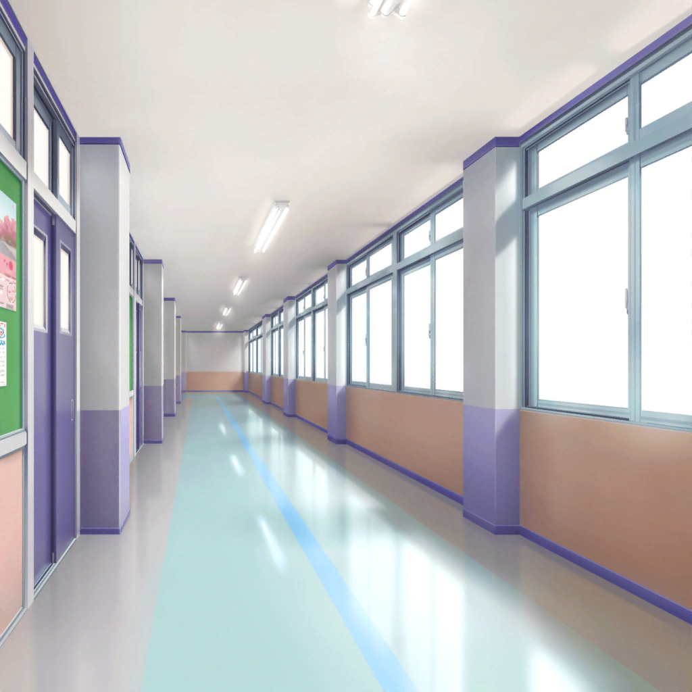

花咲川女子学園 中庭
香澄
それじゃあ、みんな一緒に……お弁当オープン！
一同
わあ～
香澄
わ〜、今日の有咲のお弁当、すっごい美味しそー！
有咲
つーか、お前……
毎日、私のお弁当見て、美味しそうって言ってるよな
香澄
なんか色味がいいんだよね～、有咲のお弁当って。
食欲をそそるって言うの？
おたえもそう思うよね？

たえ
私は、ハンバーグが欲しいな。
ねえ、有咲。
そのハンバーグとレタス、交換しない？
有咲
ハンバーグとレタス！？
正気か！？
りみ
ふふ。
おたえちゃん、よかったら私のハンバーグあげようか？
たえ
ホントに？
ありがとう、りみ！
この恩は一生忘れないよ
沙綾
おたえ……
それはさすがに、大げさ
クラスメイト
あ、市ヶ谷さん、こんなところにいたんだ。
さっき、先生が市ヶ谷さんのこと探してたよ。
お昼休み、職員室に来て欲しいって
有咲
え？ 職員室に……？
うん、わざわざありがとうね。
あとで職員室行ってみる
香澄
有咲、先生から呼び出し？ なんだろうね？
なんか心当たりある？
有咲
いや、特にはないけど……
りみ
有咲ちゃんのことだからきっと、
『ぜひ次の生徒会長になってほしい』とか、
そういうことじゃないかな？
沙綾
確かに！
それすっごいありえるね
たえ
有咲会長、頑張ってね
有咲
バッ！
そんな話なわけねーって！
香澄
今、お昼休み中に、って言ってたよね？
みんな急いでお弁当食べちゃおうよ！
それじゃあ、みんな一緒に――
香澄・沙綾・たえ・りみ
いただきまーす
香澄
あ！
有咲、今、いただきますって言ってなかった！
もう１回、やり直し！
有咲
つーか、小学生じゃねーんだから！？
わざわざみんなで言わなきゃダメか！？
勘弁してくれって！

花咲川女子学園 職員室前
有咲
あの先生……
話って、なんですか？
担任
あ、市ヶ谷さん。ごめんね、呼び出しちゃって。
実は、ちょっとだけ心配なことがあってね。
市ヶ谷さんの最近の成績のことなんだけど――
担任
単刀直入に言うと、最近ちょっと成績が落ちてきてるの。
学年トップであることに変わりはないけど……
ちょっと心配になったから、伝えておこうと思ってね
有咲
そ、そうですか……
担任
もしかしたらバンドと勉強の両立って難しいんじゃないかな？
バンドに打ち込むのもいいと思うけど、そろそろテストもあるし
将来のことを考えたら――
有咲
先生……っ！ あ、あの……成績とバンドは関係ありません。
この前のテストは単純に、難しくてできなかっただけですし……
それにバンドと勉強の両立だって問題ないです
有咲
あ、それならこうしませんか？
今度のテストで、私――
有咲
…………ったく！
ふざけんなっつーの
有咲
（なんだよ、想定してた話と全然違うじゃねーかよ。
……ま、確かに最近は香澄達との時間が増えて、
勉強の時間が減ってたのは確かだけど……）
有咲
つーか……
両立できるって言っちゃったからには……
やるしか、ねーな……っ！

市ヶ谷家 蔵
香澄
ねえねえ、有咲。
お昼休み、先生と何話したの？
やっぱり生徒会長の話だった？
有咲
ちげーって！
べ、別に、大した話じゃなかったから。なんつーの……？
最近、どう？ みたいな、世間話って感じかな
香澄
そっか～。
有咲会長が誕生するかと思ったのにな～
有咲
そ、その話はいいんだって！
そんなことより、ちょっと思ったんだけどさ……
みんなで久しぶりに、ライブとか……したくない？
香澄
え！？ すっごいしたいっ！
やっぱり有咲、気が合うね～。
私も最近ずっと、ライブがしたいなーって思ってたんだ！
たえ
私も！ ライブ、やりたい！
有咲
だ、だろ？
やっぱりせっかくバンドをやってるんだから、
みんなの前で披露しないと腕もなまっちゃうし……な？
沙綾
へぇー、有咲がそんなこと言うのって、珍しいね
有咲
そ、そっか？
ライブをしたいって思うのは、
バンドマンなら普通のことだと思うけど……？
沙綾
有咲の口から、バンドマンって……
有咲
な、なんか問題ある？
でさ、できたら……
新曲とかもやりたいって思ってるんだけど……
りみ
新曲か……
有咲ちゃんが、そう言ってくれるなら、やるしかないよね。
香澄ちゃん、歌詞の方は平気？
香澄
うん！ もっちろん大丈夫だよ！
有咲がやる気になってるんだもん、みんなでライブしようよ！
沙綾
それじゃあ早速、日程だけど……いつにしようか？
有咲
……１ヶ月後、なんてどうだ？
カレンダーでいうと……この日、とか？
りみ
その日って……えっ？
確か、テストの最終日じゃなかったっけ？
香澄
あ～！ そうだよ、有咲っ！
そこテストだよっ！
有咲
あ～、そ、そっかぁ～。
そういや、そうだったな……
あは、あははは……
有咲
（テストの最終日に新曲お披露目のライブをやって、
５科目合計480点以上とれれば、
さすがに先生だって認めないわけにはいかないだろ……）
有咲
（見てろよ……っ！
バンドと勉強の両立……ぜってーやってやる！）